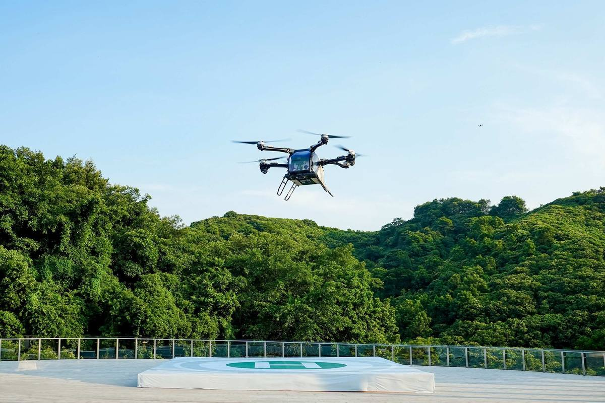
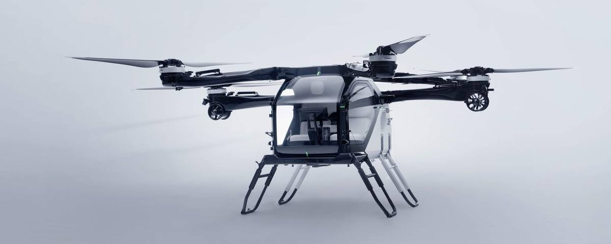
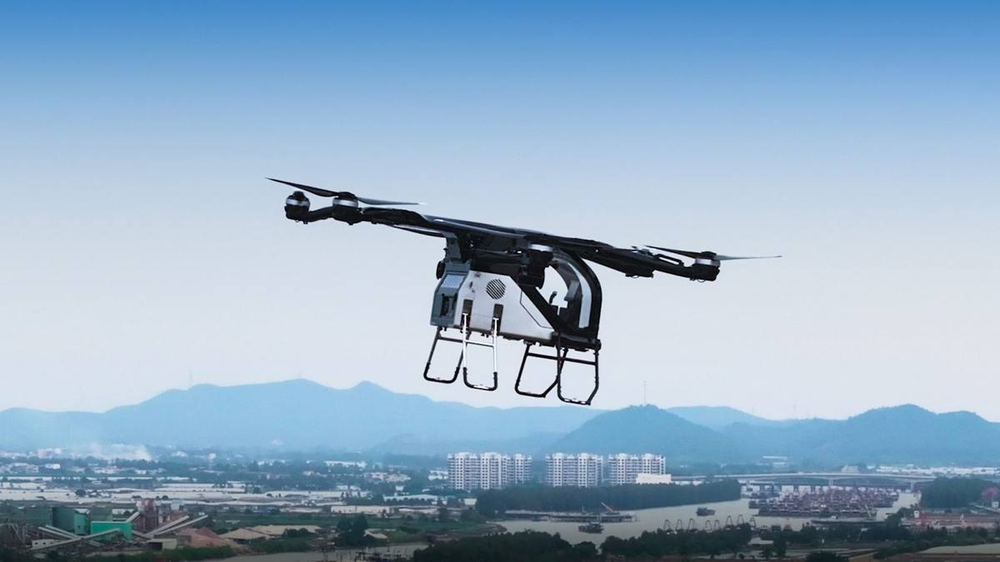
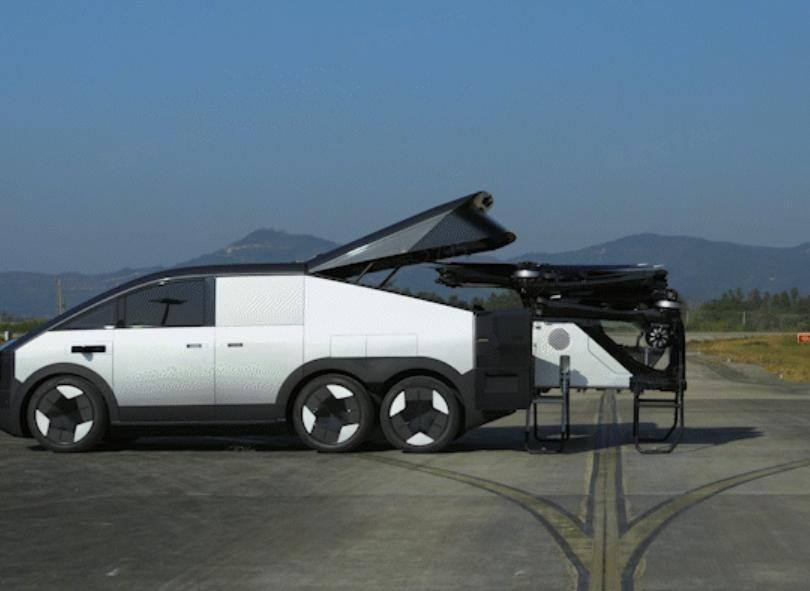
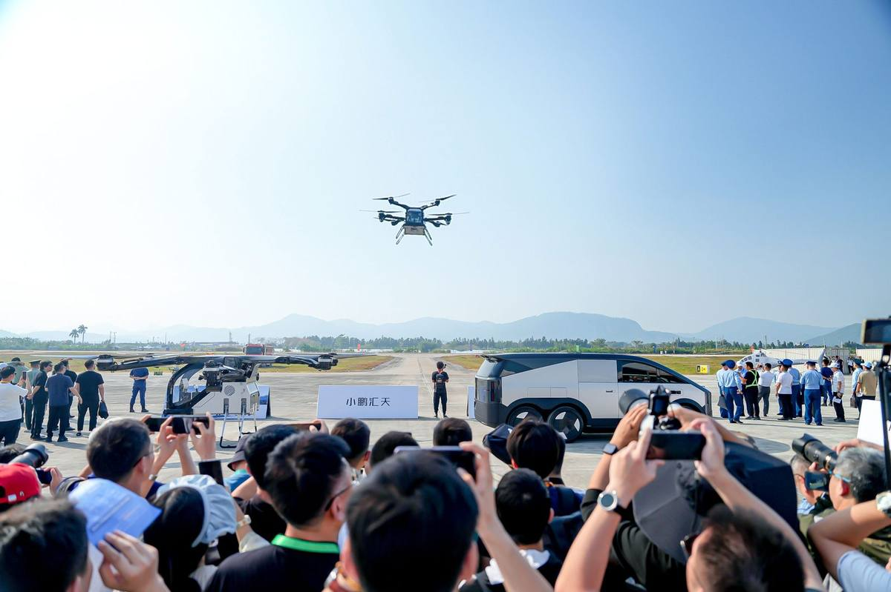
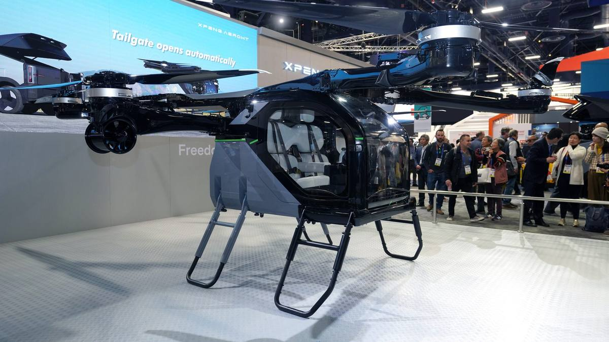

00执行摘要Executive Summary
- "陆地航母"是陆行"母舰"与纯电动双人飞行体组成的分体式载人低空系统，同时携带地面增程系统、载人座舱与载人飞行器，安全问题必须同时满足道路车辆与载人航空器两套逻辑；汽车三电技术可部分迁移，但安全与可靠性体系必须按航空适航要求重构。[1][10][11] A modular manned low-altitude system combining a range-extended mothership and a two-seat electric air module; safety must satisfy both road-vehicle and manned-aircraft logics, and automotive homologation does not transfer to aviation safety assurance.
- 公开材料显示，产品在动力推进、动力能源、高低压供电、飞控导航、飞行操控、总线通信六个方面布置了冗余备份，并宣称对桨失效仍可安全着陆；但冗余架构描述不等于冗余验证证据，失效概率、故障注入、软件独立性与应急着陆程序尚未公开。[1][2] Six redundancy domains are claimed, with continued safe landing after opposite-rotor failure; redundancy architecture is not yet redundancy evidence: failure rates, fault injection, software independence and emergency landing procedures remain undisclosed.
- 按 SSE 五层模型逐项对照：被动安全与垂直/侧向/纵向多维耐撞性缺少公开试验数据；功能安全以冗余飞控为核心，但未见 ASIL/DAL 分解与 FTA/SSA 结果；预期功能安全需覆盖阵风、低能见、GNSS 遮挡、障碍物与单杆误用等场景；行为安全依赖营地隔离运行；信息安全仅在架构层面可推断，未见 TARA 与电磁兼容证据。[10][12][13][14][15] Layer by layer, passive crashworthiness, FuSa decomposition, SOTIF scenario coverage, behavioral isolation and cybersecurity evidence are all incomplete in public materials.
- 适航进程处于审定阶段：飞行体 TC 申请 2024 年初获 CAAC 受理，PC 申请 2025 年 5 月受理，2026 年 11 月公开信息显示已取得型号检查核准书（TIA）并完成审定试飞，但尚未取得完整 TC/PC/OC，也无公开商业载客航线。[3][6][7][19] Certification is in progress: TC and PC applications accepted, TIA and certification flight tests reported; full TC/PC/OC and commercial passenger operations are not yet in place.
- 近期最现实的安全边界是封闭营地、预设航线、受限气象、隔离人员的体验飞行；把该构型外推到城市高密度通勤，会跳过全天候运行、起降密度、空中冲突、噪声与地面风险等关键安全条件。[10] The realistic near-term safety envelope is closed-site, preset-route, constrained-weather, isolated-personnel experience flight; urban high-density commuting skips critical safety conditions.
- 本报告的安全结论是阶段性的：现有证据支持"完成了受控演示与冗余概念设计"，不支持"已证明可重复安全载人运输"。后续应追踪审定文件、独立测试报告、安全案例（Safety Case）与故障/事故记录四类证据。[12][18] The stage-gated conclusion: controlled demos and redundancy concepts are supported; repeatable safe manned transport is not yet proven. Certification files, independent tests, safety cases and incident records should be tracked.
01研究对象与安全边界01 Object and Safety Boundary
分析对象为小鹏汇天"陆地航母"整车族，包含三部分：增程式陆行"母舰"、纯电动双人飞行体、车—机自动分合机构；外部边界包含起降营地、空域、地面人员与运营程序。分析时间范围为 2013 年汇天成立至 2026 年 11 月 25 日，证据来源包括企业官方发布、政府门户、券商研报、第三方行业媒体、CAAC/EASA/FAA 监管文件、ISO/SAE/IEEE 标准与课程讲义。[1][10] The object covers the range-extended mothership, the two-seat electric air module, the docking mechanism, plus external boundaries: vertiport, airspace, ground personnel and operating procedures.
1.1 双重监管身份带来的安全标准叠加 Dual-regime safety overlay
课程讲义指出，新能源汽车与无人机虽与飞行汽车技术同源，但体系不等价：三电技术同源度约 70%，运行管控经验迁移率约 20%–30%；载人航空器要求极高可靠性（失效概率量级约 10⁻⁹）、冗余架构与高功率密度，必须按航空适航体系进行系统级重构，开展 SSA、FHA、FTA 等系统安全分析。道路车辆面向个体事故、可容错的风险文化，航空侧则是单机事故即重大公共风险、事前强约束的风险容忍文化。[11][13] Homologous technology is not equivalent safety culture: road vehicles tolerate individual mishaps; aviation treats a single mishap as a major public risk and demands 10⁻⁹-level reliability, redundancy and structured safety analysis.
| 边界单元 Boundary unit | 主要安全关注 Safety concerns | 监管参照 Reference regime |
|---|---|---|
| 陆行体（母舰）Mothership | 增程动力与高压电气安全、底盘/悬架承载、转运固定、道路行驶与泊车、移动补能接口 | 道路车辆法规 + 车辆电气/功能安全标准 |
| 飞行体（飞行器）Air module | 旋翼升力与姿态控制、电池与电驱、复材结构、飞控冗余、迫降生存性、空中防火 | 载人航空器适航体系（CAAC / SC-VTOL / powered-lift 类比） |
| 分合机构 Docking mechanism | 对接精度、结构锁止、作动器失效、转运振动缓冲、车—机运动协调 | 车辆机构安全 + 航空器安装/系留要求类比 |
| 运行环境 Operating environment | 空域与航线、气象边界、起降场地、地面人员隔离、通信导航监视、运营人资质与保险 | 空管/运营许可 + 场地与运行安全规范 |
02安全系统工程框架02 Safety Systems Engineering Framework
系统工程（SE）关注需求定义、架构分解、实现与验证确认；安全系统工程（SSE）在其之上聚焦可靠性、可用性、维修性与安全性（RAMS）；自动驾驶汽车安全系统工程（AVSSE）是 SSE 在智能运载工具领域的应用。本报告沿用课程给出的 SSE 逻辑：自下而上由系统工程展开安全分析，提取安全需求，落实安全措施并完成验证确认，最终形成可论证的安全案例。[10] SE defines, decomposes, implements and validates; SSE adds RAMS focus; the SSE pyramid runs systems engineering → safety analysis → safety requirements → safety measures → safety argument.
2.1 五层安全模型：由内而外 Five safety layers, inside out
被动安全Passive
事故发生后保护乘员与地面人员：约束系统、结构吸能、耐撞性、撤离与生存空间。
功能安全FuSa
降低 E/E 软硬件失效风险：故障探测、冗余切换、降级与回到安全状态。
预期功能安全SOTIF
降低无故障情况下由性能局限、感知边界与人为误用带来的风险。
行为安全Behavior
降低与其他交通参与者交互带来的风险：安全距离、路权、可见性与避让规则。
信息安全Security
降低外部攻击、链路入侵与电磁干扰带来的风险：TARA、访问控制、防护与监测。
2.2 SSE 论证金字塔 SSE argument pyramid
2.3 智能运载工具 SSE 基本过程（0–8）SSE process stages 0–8
安全文化与管理
组织职责、安全方针、生命周期管理与独立评审机制。
整机功能与场景定义
任务剖面、运行设计条件（ODC）、边界与禁用场景。
安全分析方法
HARA、FHA、STPA、FMEA、FTA、CCA、PSSA/SSA、TARA。
系统安全架构
冗余表决架构（1oo1/1oo2/2oo2/1oo3/2oo3/1oo2D）与安全机制分配。
硬件安全设计
绝缘、短路与供电保护、高压互锁、故障检测与寿命裕度。
软件安全设计
智能系统监控、状态机、降级策略、软件独立性与失效监控。
机械/化学安全
振动碰撞滚翻防护、IP 防护、阻燃防腐、电池热稳定与热失控控制。
安全测试验证
逻辑/具体/测试场景生成，组件、系统集成、整机测试与安全确认。
运行安全论证
流程论证 + 产品安全论证（GSN），支撑运行许可与持续安全。
03整机功能与运行场景定义03 Mission Functions and Operational Design Conditions
安全分析的起点是明确"系统在什么条件下、完成什么任务"。参照课程对 ODD/ODC 的分析方法，先把"陆地航母"一次典型任务分解为地面行驶、收纳对接、起飞离场、巡航、进近着陆、回收补能六个阶段，再逐阶段列出环境条件、参与者与失效后果。[10] The analysis begins with mission decomposition: ground drive, docking/stowage, takeoff, cruise, approach-landing, recovery/charging, each with its own environment, actors and failure consequences.
| 任务阶段 Phase | 系统功能 Function | 关键环境条件 Environment | 主要失效后果 Failure outcome |
|---|---|---|---|
| 地面行驶Ground drive | 增程动力、底盘悬架、转向、道路避让 | 道路/营地道路、其他车辆与行人、天气 | 道路碰撞、部件脱落、转运中飞行体移位 |
| 收纳对接Docking/stowage | 自动分合机构、精准泊车、结构锁止、补能接口 | 平整场地、风速、人员隔离、对准精度 | 锁止失效、夹伤、对接坠落、补能拉弧 |
| 起飞离场Takeoff | 旋翼/涵道推力、姿态控制、离地与爬升 | 净空、阵风、地面效应、载荷重量 | 推力不对称、姿态失控、坠落、下洗伤人 |
| 巡航Cruise | 航线保持、轨迹控制、融合感知、动力供电 | 空域、障碍物、气象、GNSS/通信信号 | 偏航/失联、电池故障、撞障、空中冲突 |
| 进近着陆Approach/landing | 下降轨迹、降落辅助、着陆缓冲、复飞 | 场地净空、能见度、侧风、地面状态 | 重着陆、冲出场地、复飞失败、迫降伤害 |
| 回收补能Recovery/charging | 机构回收、电池补能、状态监测 | 场地、充电接口、电池温度、人员 | 热失控、电气伤害、机构卡滞 |
从"人—机—环境"系统视角看，传统模式下由人完成感知与决策，自动化程度提高后，系统承担更多 Sense–Think–Act 职责，人的角色从操作者转变为监督者/接管者。飞行体配置单杆手动与自动双模式：自动模式提供一键起降、航线规划、巡航、一键返航、全向融合感知与降落视野辅助，驾驶员可随时优先接管，飞控导航全程进行姿态保护。需要重点分析的是接管边界：何时由系统控制、何时必须人介入、接管延迟期间系统如何保持安全状态。[1][10] As automation takes over Sense–Think–Act, the human becomes supervisor/override; the handover boundary, takeover delay and system hold-state must be analyzed explicitly.

04危害辨识与风险评估04 Hazard Identification and Risk Assessment
下列危害清单是基于公开信息与课程方法的教学性辨识，用于组织安全分析思路，不等同于企业 FHA/HARA 输出。分析方法映射：整机层用 HARA、FHA、STPA 识别顶层不安全动作与失控状态；系统层用 FMEA、FTA、STPA、CCA、PSSA/SSA 追溯原因与冗余贡献；组件层用 FMEA、FTA、FMEDA、CAE 分析单点故障；网络安全用 TARA 识别威胁与攻击路径。[10] The hazard list is a teaching-level identification using HARA/FHA/STPA at vehicle level, FMEA/FTA/CCA/PSSA/SSA at system level, FMEDA/CAE at component level, and TARA for security.
| 编号 | 危害场景 Hazard | 可能原因 Causes | 潜在后果 Outcome | 风险等级 Teaching level |
|---|---|---|---|---|
| H1 | 动力/旋翼失效Propulsion/rotor failure | 电机或涵道卡滞、桨叶损伤、对桨失效、功率输出不足 | 推力不对称、迫降或坠落 | 高 |
| H2 | 电池热失控/电气故障Battery thermal/electrical | 电芯内短路、过充过放、碰撞损伤、冷却失效、高压短路 | 空中起火、断电、结构烧毁 | 高 |
| H3 | 飞控/感知失效Flight control/perception | 传感器冲突、GNSS/通信丢失、控制器故障、算法误判 | 姿态失控、撞地/撞障、偏航失联 | 高 |
| H4 | 分合机构锁止失效Docking lock failure | 作动器卡滞、锁止未到位、运动协调误差、振动松脱 | 飞行体空中分离、转运坠落 | 高 |
| H5 | 超出运行设计条件ODC exceedance | 阵风/雷雨/低能见/低温、GNSS 遮挡、复杂地形、超载荷 | 性能越界、失控、迫降 | 中高 |
| H6 | 人为误用/接管延迟Human misuse/handover | 单杆误操作、HMI 误解、接管犹豫、训练不足 | 误动作、偏离航线、错过应急时机 | 中 |
| H7 | 网络攻击/电磁干扰Cyber/EMI attack | 链路劫持、OTA 被篡改、补能接口入侵、电磁脉冲/干扰 | 指令被操纵、传感失真、系统被禁用 | 中高 |
| H8 | 地面人员/车辆伤害Ground harm | 起降场未隔离、下洗气流、闯入人员、转运碰撞 | 地面人员卷入或击打、财产损失 | 中 |
| H9 | 多维碰撞Crash, 3 axes | 纵向追尾/冲出、侧向刮碰、垂直坠落、翻滚 | 乘员伤害、复材破碎、二次火灾 | 高 |
| H10 | 高压补能电气伤害High-voltage charging | 绝缘破损、接插不良、漏电、充电过热、互锁失效 | 触电、拉弧、充电起火 | 中 |
| H11 | 结构/折叠机构损伤Structure/fold mechanism | 复材冲击损伤、疲劳裂纹、机臂折叠磨损、腐蚀老化 | 结构强度下降、空中解体风险 | 中高 |
| H12 | 运行程序/空域冲突Procedural/airspace conflict | 调度错误、航线冲突、天气改航未审批、多机同场 | 空中相撞、误入管制空域 | 中 |
表 1 ｜ 风险等级为教学性定性分级，综合后果严重度与当前公开证据下的可能性，不代表正式风险评估结论。Qualitative teaching-level grading combining severity and current public-evidence likelihood, not a formal risk assessment.
05被动安全：事故发生后的生存与防护05 Passive Safety
被动安全回答"碰撞或迫降后如何保护乘员与地面人员"。课程讲义将被动安全列为五层安全的最内层，涵盖乘员保护、行人保护与多维耐撞性。对飞行汽车而言，碰撞需同时考虑纵向、侧向与垂直三个方向：道路行驶中的追尾/刮碰，以及空中失效后的垂直坠落与翻滚。[10] Passive safety protects occupants and ground people after a crash; for flying cars, crashworthiness must cover longitudinal, lateral and vertical impacts.
| 要素 Element | 设计关注点 Concern | 公开证据状态 Evidence |
|---|---|---|
| 乘员约束与座舱Crew restraint | 双人座舱约束系统、迫降姿态保持、生存空间、撤离通道 | 待验证 未见约束系统与坠撞试验公开数据 |
| 结构吸能Energy absorption | 碳纤维机身与机臂的压溃/吸能设计、旋翼脱落防护、座舱完整性 | 设计宣称 采用碳纤维机身与桨叶；未见复材坠撞试验 |
| 垂直坠落生存性Vertical crashworthiness | 着陆缓冲、滑橇/起落吸能、整机下沉速度控制、燃油/电池隔离 | 待验证 未见迫降生存性指标与试验记录 |
| 地面人员防护Ground protection | 起降场隔离、旋翼/桨叶防护罩、下洗气流控制、残骸散落范围 | 设计宣称 营地隔离运行；场地防护标准未见公开 |
| 防火阻燃Fire protection | 复材阻燃、电池舱隔离、空中火情处置、撤离灭火 | 待验证 防火材料与火情试验未披露 |
需要指出，碳纤维复合材料在减重的同时存在纤维断裂、基体开裂、界面脱粘、冲击损伤与疲劳循环等复杂失效模式，必须在碰撞、火烧、石击、盐雾与维修误操作等环境耐久条件下验证剩余强度；这类结构适航验证通常对应航空器结构强度与损伤容限要求，而非普通车辆碰撞标准。[10] Carbon fiber reduces mass but introduces complex failure modes; residual strength under crash, fire, stone, salt and maintenance abuse must be verified against structural strength and damage-tolerance requirements.
06功能安全：E/E 失效、冗余与降级06 Functional Safety: E/E Failure, Redundancy and Degradation
功能安全（ISO 26262）处理电子电气软硬件失效带来的风险：通过安全分析、ASIL 分解与安全机制，在足够短时间内探测危害事件，使系统回到安全状态，并把新增 E/E 功能引入的风险降到可接受范围。对载人航空器，对应航空侧的冗余架构、故障树分析与系统安全评估，可靠性目标按航空量级管理。[12][13][11] FuSa detects hazardous E/E failures within a short time and restores a safe state; manned aviation translates this into redundancy architecture, FTA and system safety assessment with aviation-level reliability targets.
6.1 公开披露的六类冗余域 Six disclosed redundancy domains
| 冗余域 Redundancy domain | 官方披露 Claim | 对应安全措施 Safety measure to verify | 证据状态 Evidence |
|---|---|---|---|
| 动力推进Propulsion | 动力推进系统冗余备份，对桨失效仍期望安全着陆 | 余度电机/桨组、推力再分配、故障隔离、单失效后包线 | 设计宣称 失效着陆包线与试验未公开 |
| 动力能源Energy source | 动力能源冗余备份 | 电池分组/备用能源、能源切换、剩余电量与迫降能量管理 | 设计宣称 电池分组与切换逻辑未披露 |
| 高低压供电Power supply | 高压、低压供电冗余备份 | 双路配电、供电监控、短路/过流保护、断电降级 | 设计宣称 配电架构与试验未公开 |
| 飞控导航Flight control / nav | 飞控导航冗余备份，全程姿态保护 | 余度控制器、传感器交叉校验、导航融合、监控表决 | 设计宣称 架构表决方式与独立性未公开 |
| 飞行操控Control manipulation | 飞行操控冗余备份 | 操纵通道余度、作动器冗余、手动/自动切换失效安全 | 设计宣称 未见通道独立性分析 |
| 总线通信Bus communication | 总线通信冗余备份 | 双总线/冗余链路、报文监控、失联降级与返航 | 设计宣称 通信协议与失联策略未公开 |
6.2 冗余架构与待验证问题 Redundancy architecture and open questions
课程给出的典型安全表决架构包括 1oo1、1oo2、2oo2、1oo3、2oo3、1oo2D 等形式，不同架构在可用性、故障检测与共因失效方面取舍不同。公开材料未说明飞行体采用何种表决架构、余度通道之间是否独立、是否存在共因失效（同源软件、共用传感器、共用线束）。功能安全还需回答：单点故障能否被及时探测？故障后是 fail-shutdown 还是 fail-operational？降级包线内能否完成返航或迫降？安全需求是否逐层分解到硬件与软件组件？[10] Public materials do not state the voting architecture, channel independence or common-cause exposure; open questions include fault detection time, fail-shutdown vs fail-operational, degraded envelope and requirements decomposition to HW/SW.
07预期功能安全：性能局限与人为误用07 SOTIF: Performance Limitations and Misuse
预期功能安全（ISO 21448）处理"系统没有硬件/软件故障，但功能不足、性能边界或可预见误用仍可能导致风险"的问题。课程把 SOTIF 场景归纳为三类：功能可能不足、ODD 可能退出、驾驶员可能无法完成所需操作。对"陆地航母"而言，许多风险并非来自器件损坏，而是来自感知与控制能力在特定场景下的边界。[13] SOTIF addresses risks without E/E failure: insufficient functionality, ODD exit and driver inability. For this vehicle, many risks arise at perception/control boundaries rather than component breakage.
| SOTIF 场景 Scenario | 局限/误用来源 Source of limitation | 需要验证的证据 Evidence to verify |
|---|---|---|
| 低能见与光照变化Low visibility / light | 摄像头/视觉感知在夜间、逆光、雾雨中性能下降 | 边界条件下感知命中率、虚警/漏警、降级提示 |
| 阵风与复杂气象Gust / weather | 抗风等级、阵风扰动、湍流与下沉气流超出控制能力 | 风洞/试飞包线、姿态保持裕度、气象准入标准 |
| GNSS/通信遮挡GNSS/comms occlusion | 楼宇、地形、树林遮挡定位与链路，信号延迟或丢失 | 多源导航融合、失联返航策略、悬停/备降能力 |
| 障碍物与复杂场地Obstacles / site | 电线、树木、临时人员、旗帜等小目标识别困难 | 小目标探测距离、避让轨迹、场地净空核查流程 |
| 单杆操纵误用Stick misuse | 驾驶员误推拉杆、模式误解、接管犹豫、训练不足 | HMI 模式提示、误操作防护、训练大纲与考核、接管时间 |
| 载荷与重心变化Payload / CG shift | 乘员行李、电池状态改变重量与重心，超出包线 | 载重边界、重心包线、装载检查与称重流程 |
SOTIF 的验证逻辑是"场景驱动"：先定义逻辑场景与性能边界，再生成具体场景与测试场景，在测试中发现未知不安全场景并反馈到设计或 ODD 约束。课程参照 ISO 34502 的场景评价框架，可建立"任务—场景—危险—控制措施—验证方法"的映射。对当前产品，应优先补充营地常见边界场景（侧风起降、低光飞行、小目标避让、GNSS 丢失、单杆误输入）的公开测试结果。[14] SOTIF verification is scenario-driven: logical → concrete → test scenarios, feeding unsafe cases back to design or ODD constraints; boundary cases for the campsite should be prioritized.


08行为安全：与参与者的交互风险08 Behavioral Safety: Interaction with Other Agents
行为安全（IEEE P2846 提供自动驾驶行为模型假设基础）关注系统如何与其他交通参与者安全交互，典型议题包括安全距离、加塞切入、路权判断与受限视野。飞行汽车的参与者不仅有地面车辆与行人，还包括空中其他航空器、地面工作人员与围观人员；近期封闭营地模式正是用物理隔离来压缩行为交互的不确定性。[16] Behavioral safety covers safe distance, cut-in, right-of-way and limited visibility; for flying cars agents include other aircraft, ground crew and onlookers; the closed-campsite model reduces interaction uncertainty through physical isolation.
| 交互对象 Agent | 风险场景 Interaction risk | 缓解方向 Mitigation |
|---|---|---|
| 地面人员Ground people | 闯入起降区、围观接近旋翼、下洗气流吹倒物品或人员 | 物理围栏与警戒、起降前喊话/广播、净空确认流程、桨叶防护 |
| 地面车辆Ground vehicles | 营地车辆靠近起降坪、转运路径交叉、泊车干扰对接 | 场内交通管制、专用通道、对接区锁闭、人车分流 |
| 其他航空器Other aircraft | 同场多机、通用航空飞机/直升机/无人机闯入航线 | 空域申请、高度/航线间隔、冲突告警、避让与返航规则 |
| 运营人与调度Operator / dispatch | 指令错误、多机调度冲突、天气改航沟通失误 | 标准通话、调度冗余、运行手册、人员资质与演练 |
行为安全的长期挑战在于：一旦从隔离营地走向开放空域与城市上空，系统必须在不确定的他机意图中做出可预期、可解释的避让决策；这部分能力目前在公开材料中尚未展开，属于中期运行安全论证的重点。[10] Moving from isolated sites to open airspace requires predictable, explainable avoidance under uncertain other-agent intent; this remains a future operational-safety focus.
09信息安全与电磁兼容09 Cybersecurity and Electromagnetic Compatibility
信息安全（ISO/SAE 21434）在功能安全开发流程之上加入威胁分析与风险评估（TARA）及验证过程，应对外部攻击导致的潜在风险。载人低空系统的攻击面包括飞行控制链路、OTA 升级、地面站/手机控制、补能接口、传感器与车载网络；此外还需考虑电磁干扰与电磁攻击对飞控、导航和通信的影响。[15] Cybersecurity adds TARA and verification on top of the safety lifecycle; attack surfaces include control links, OTA, ground station/phone control, charging interface, sensors and onboard network, plus EMI/EMC resilience.
| 威胁路径 Threat path | 潜在后果 Consequence | 应具备的安全措施 Required measures | 证据状态 Evidence |
|---|---|---|---|
| 无线控制链路劫持Link hijack | 指令被伪造或重放，操纵失控 | 链路加密、身份认证、防重放、异常指令监测与失效锁定 | 未证明 未见 TARA 与协议说明 |
| OTA/软件被篡改Tampered update | 恶意固件植入、飞控逻辑被改 | 签名校验、版本回滚、安全启动、更新审计（类比 UN R156） | 未证明 |
| 补能/车载网络入侵Charging/network intrusion | 通过接口进入车载总线，干扰供电或控制 | 网络分区、接口鉴权、入侵检测、物理访问控制 | 未证明 |
| 传感器欺骗/电磁干扰Sensor spoofing / EMI | 定位/感知数据失真，姿态或导航错误 | 多源交叉校验、EMC 试验、异常一致性监测、抗干扰设计 | 待验证 |
课程讲义在飞行汽车设计阶段要求中明确列出：保护系统免受潜在网络安全威胁、电磁攻击与入侵。对应法规趋势可参照 UN R155 网络安全管理体系与 R156 软件更新管理体系；航空侧还需考虑机载系统信息安全与电磁环境适航要求。当前公开材料以产品功能介绍为主，未披露 cybersecurity 流程、TARA 结果或 EMC 试验情况，这是安全论证中明显的证据缺口。[10][15] Course materials explicitly list cybersecurity and EMI protection; public materials lack security process, TARA results and EMC evidence — a clear safety-case gap.
10硬件、软件与机械/化学安全设计10 Hardware, Software and Mechanical/Chemical Design
10.1 硬件安全 Hardware safety
硬件层应覆盖绝缘防护、短路保护、供电保护、高压互锁与故障检测；飞行体全域 800V 碳化硅高压平台涉及电池、电驱、电涵道与压缩机，高压电气安全是硬件设计重点。需要验证的内容包括：绝缘电阻与耐压、触点/接插可靠性、过流过温保护、高压互锁回路、断电后剩余电压释放，以及故障状态下的安全断电策略。[10][1] Hardware covers insulation, short-circuit and supply protection, HV interlock and fault detection; the all-800V SiC platform makes high-voltage electrical safety a priority.
10.2 软件安全（智能系统）Software safety for intelligent systems
飞控、感知与自动飞行软件属于安全关键软件。航空侧对标 DO-178C 开展机载软件分级与生命周期保证；汽车侧参照 ASPICE 与 ISO 26262 软件层面要求。需要回答：软件需求是否可追溯、模块/单元测试与覆盖率如何、自动飞行算法的边界条件如何定义、监控与降级逻辑是否独立于主控制通道、智能决策失效时如何进入安全状态。公开材料未披露软件分级、开发流程与测试覆盖率。[22] Flight-control and perception software are safety-critical; traceability, coverage, boundary definition, independent monitoring and fail-safe behavior must be addressed; software level and process are undisclosed.
10.3 机械与化学安全 Mechanical and chemical safety
| 类别 Category | 设计要点 Design focus | 公开状态 Status |
|---|---|---|
| 机械结构Mechanical | 振动/碰撞/滚翻防护、IP 防护、防呆设计、防火阻燃、防腐蚀；机臂折叠与作动机构磨损、疲劳与锁止可靠性 | 设计宣称 碳纤维机身桨叶、折叠机臂；耐久试验未公开 |
| 动力电池Battery | 化学与热稳定性、热失控预警及控制、电芯隔离、排烟灭火、循环寿命与状态监测 | 待验证 电池分包数与热管理细节未披露；第三方报道约两组 25 kWh 量级 |
| 复合材料Composites | 冲击损伤可见性、分层扩展抑制、修理与无损检测、剩余强度评估 | 待验证 复材维修方案与检测标准未见公开 |
| 燃油/增程系统Range-extender | 陆行体增程器燃油泄漏、碰撞防火、振动固定与排放控制 | 待验证 沿用车辆安全体系，航空协同部分未见说明 |

11安全测试验证：V 模型与场景链11 Safety Verification and Validation
课程实现方法按 V 模型组织：左侧为基于场景的安全开发（整机功能定义、安全概念与架构、系统安全分析、安全需求提取、组件需求提取）；右侧为基于场景的安全测试验证（逻辑场景与性能边界、具体场景与测试场景生成、组件测试、系统集成测试、整机集成测试、整机安全确认）。[10] The V-model pairs scenario-based development on the left with scenario-based verification on the right: component, system integration, vehicle integration and safety confirmation.
| 验证层级 Level | 验证内容 V&V content | 当前公开状态 Public status |
|---|---|---|
| 组件测试Component | 电机/涵道、电池、控制器、传感器、作动器单机耐久与故障测试 | 待验证 未见组件级试验报告 |
| 系统集成测试System integration | 飞控—动力—供电—通信联调，故障注入与冗余切换 | 部分可见 公开演示含预设科目飞行；故障注入未见披露 |
| 整机集成测试Vehicle integration | 全包线试飞、抗风、起降、迫降、复飞、极端环境试验 | 部分可见 珠海航展完成四大预设科目；包线数据未公开 |
| 安全确认Safety confirmation | 整机安全需求闭环、残余风险评审、安全案例评审 | 未证明 未见公开安全案例与独立评审结论 |


12适航审定与运行安全论证12 Airworthiness and Operational Safety Argument
载人飞行汽车进入公共运行，必须通过航空器适航与运营许可闭环：型号合格证（TC）证明设计安全可行、生产许可证（PC）证明制造商可批量生产合格产品、运营合格证（OC）证明运营主体具备持续安全运行能力。课程同时指出，全球适航体系仍处于从"个案突破"走向"体系构建"的过渡期，国内以"一事一议"专用条件推进，EASA SC-VTOL 提供相对完整的 eVTOL 技术框架，FAA 以 powered-lift 路径整合动力升力航空器。[11][17][24][25] Manned flight requires the TC-PC-OC closure; global eVTOL airworthiness is transitioning from case-by-case to systematic rules, with CAAC special conditions, EASA SC-VTOL and FAA powered-lift as reference paths.
| 审定/论证环节 Stage | 要求要求 Requirement | 陆地航母当前状态 Status |
|---|---|---|
| 型号合格 TCType certificate | 设计符合适用适航专用条件，安全目标可论证 | 审定中 申请 2024.01 获 CAAC 受理；2026.11 已获 TIA 并完成审定试飞，尚未取证[3][19] |
| 生产许可 PCProduction certificate | 质量体系保证批量生产与设计一致 | 审定中 申请 2025.05 受理；试产首台下线[6] |
| 运营合格 OCOperating certificate | 运营人、人员资质、程序、维修与保险满足持续安全 | 未证明 未见公开商业载客运营许可 |
| 安全案例 Safety case | 以 GSN/SACM 组织安全目标—需求—证据推理链（参照 ANSI/UL 4600） | 未证明 公开材料未见结构化安全案例 |
| 持续适航Continuing airworthiness | 维修大纲、寿命管理、故障报告、改装与追溯 | 待验证 维修保障制度未公开 |
12.1 可参照的标准体系 Reference standards
| 领域 Domain | 标准/文件 Standard | 关注点 Focus |
|---|---|---|
| 汽车功能安全Vehicle FuSa | ISO 26262 / GB 34590 | E/E 失效风险、ASIL 分解、安全机制 |
| 预期功能安全SOTIF | ISO 21448 | 性能局限、感知边界、人为误用 |
| 信息安全Cybersecurity | ISO/SAE 21434；UN R155 / R156 | TARA、网络安全管理体系、软件更新管理 |
| 行为安全Behavior | IEEE P2846；SAE J3187（STPA） | 交互行为假设、系统理论过程分析 |
| 航空系统/软件/硬件Aviation | SAE ARP4754A、ARP4761、DO-178C、DO-254 | 系统开发、安全评估、机载软件与硬件保证 |
| 系统安全工程System safety | MIL-STD-882E；ANSI/UL 4600；ISO TR 4804 | 系统安全管理、自主产品安全案例、ADS 安全与网络框架 |
| 航空器专用条件Aircraft SC | EASA SC-VTOL-01；FAA powered-lift；CAAC 专用条件 | 飞行性能、结构、飞控、乘员与运行要求 |
运行安全论证分两层：流程安全论证考察组织、人员、生命周期与方法工具是否充分；产品安全论证用 GSN 把安全目标逐层分解到各系统/组件需求，并由测试、分析与评审证据支撑。对本产品，仅有演示飞行不足以构成产品安全论证；还需要把每一项安全需求对应到可核查的证据，并明确残余风险的接受方与边界条件。[10][18] Operational argument splits into process assurance and product argument; demo flights alone do not constitute a product safety case — each safety claim needs traceable evidence and an accepted residual-risk boundary.
13风险结论与未决问题13 Risk Conclusion and Open Issues
| 结论层级 Level | 当前判断 Current judgment |
|---|---|
| 已演示 | 受控场地垂直起降、预设科目飞行、自动分合对接、自动/手动双模式切换展示 |
| 设计宣称 | 六类冗余备份、对桨失效安全着陆、碳纤维轻量化、全域 800V 平台、单杆操纵与自动飞行辅助 |
| 待验证 | 抗风与气象包线、电池热管理与循环寿命、复材损伤容限、故障注入与冗余切换、EMC、组件耐久 |
| 未证明 | 可重复安全载人运输、完整 TC/PC/OC 与商业载客许可、结构化安全案例、网络安全 TARA 与独立评审结论 |
13.1 未决问题清单 Open questions
- 飞行体的飞行包线：最大速度、使用高度、抗风等级、载荷曲线、滞空时间与气象准入条件尚未公开。
- 冗余架构形式、通道独立性、共因失效分析与单点故障探测/降级策略未见披露。
- 电池容量与分组、热失控预警控制方案、循环寿命与补能安全流程缺少官方数据。
- 被动安全：约束系统、垂直坠撞生存性、复材吸能与地面人员防护未见试验证据。
- 信息安全：链路加密、OTA 签名、网络分区与 EMC 试验情况未披露。
- 适航与运营：TC/PC/OC 进度、运行场景限制、人员资质、维修大纲与强制责任保险安排需以监管文件为准。
- 第三方报道在重量、航时、订单与交付节点上口径不一，应以 CAAC 审定文件与企业官方更新为准。[6][7]
14参考文献References
- 小鹏汽车. 小鹏汇天"陆地航母"飞行汽车实车首次亮相广州，飞行首秀演绎未来应用场景[EB/OL]. 2024-09-04. https://www.xiaopeng.com/news/company_news/5361.html
- 小鹏汽车. 小鹏汇天"陆地航母"珠海航展完成全球公开首飞[EB/OL]. 2024-11-12. https://www.xiaopeng.com/news/company_news/5419.html
- 小鹏汽车. 小鹏汇天"陆地航母"飞行汽车海外首秀，计划 2026 年量产交付[EB/OL]. 2025-01-08. https://www.xiaopeng.com/news/company_news/5438.html
- 广州市黄埔区人民政府. 全球首款分体式飞行汽车登陆广州开发区[EB/OL]. 2024-09-05. https://www.hp.gov.cn/xwzx/zwzt/hpqdkjjjqzl/zcjd/content/post_9855040.html
- 湖北省经济和信息化厅. 飞行汽车，亮相武汉！年内交付[EB/OL]. 2026-05-15. https://jxt.hubei.gov.cn/bmdt/rdjj/202605/t20260515_5937604.shtml
- Venture Atlas. Land Aircraft Carrier — Aridge[EB/OL]. 2026-09-07. https://www.ventureatlas.org/product/aridge-land-aircraft-carrier
- Avi-Go. Xpeng's Aridge Prices Land Aircraft Carrier Below 2 Million Yuan, but Orders, Deliveries and Permits Remain Unsettled[EB/OL]. 2026-11-12. https://avi-go.com/news/articles/3a39779f6de661e71286483262892648
- 国信证券. 小鹏汽车-W（09868.HK）：第二代 VLA、Robotaxi、全新一代 IRON、汇天飞行体系[R/OL]. 2025-11-08. https://pdf.dfcfw.com/pdf/H3_AP202511081777640776_1.pdf
- 中国汽车工程学会. 飞行汽车发展报告 2.0：迈向空地一体交通新时代[R]. 2026.
- 张玉新. 第五章 飞行汽车产业分析及支撑技术：安全系统工程章节[Z]. 自动驾驶安全联合实验室，吉林大学，2026.
- 张玉新. 第四章 飞行汽车的现状及展望[Z]. 自动驾驶安全联合实验室，吉林大学，2026.
- ISO. ISO 26262:2018 Road vehicles — Functional safety[S]. Geneva: ISO, 2018.
- ISO. ISO 21448:2022 Road vehicles — Safety of the intended functionality[S]. Geneva: ISO, 2022.
- ISO. ISO 34502:2022 Road vehicles — Test scenarios for automated driving systems — Scenario based safety evaluation framework[S]. Geneva: ISO, 2022.
- ISO/SAE. ISO/SAE 21434:2021 Road vehicles — Cybersecurity engineering[S]. Geneva: ISO/SAE, 2021.
- IEEE. IEEE P2846 Assumptions for Models in Safety-Related Automated Vehicle Behavior[S]. 2022.
- EASA. Special Condition for Small Vertical Take-off and Landing Aircraft (SC-VTOL-01)[Z]. 2019.
- ANSI/UL 4600. Standard for Safety for the Evaluation of Autonomous Products[S]. UL, 2023.
- 财经网汽车. 2026 小鹏科技日：汇天已获型号检查核准书（TIA）并完成审定试飞[EB/OL]. 2026-11-25.
- SAE International. SAE ARP4754A Guidelines for Development of Civil Aircraft and Systems[S]. 2010.
- SAE International. SAE ARP4761 Guidelines and Methods for Conducting the Safety Assessment Process on Civil Airborne Systems and Equipment[S]. 1996.
- RTCA. DO-178C Software Considerations in Airborne Systems and Equipment Certification[S]. 2011.
- RTCA. DO-254 Design Assurance Guidance for Airborne Electronic Hardware[S]. 2000.
- FAA. Integration of Powered-Lift: Pilot Certification and Operations[EB/OL]. Federal Register, 2024.
- PAN G, ALOUINI M-S. Flying Car Transportation System: Advances, Techniques, and Challenges[J]. IEEE Access, 2021, 9: 24586-24603. DOI:10.1109/ACCESS.2021.3056798.
- U N. UN Regulation No. 155 Cyber security and cyber security management system; No. 156 Software update and software update management system[S]. UNECE.
- SAE International. SAE J3187 Recommended Practice for Applying Analytical Techniques for Development and Assurance of Automated Driving Systems (STPA)[S]. 2022.